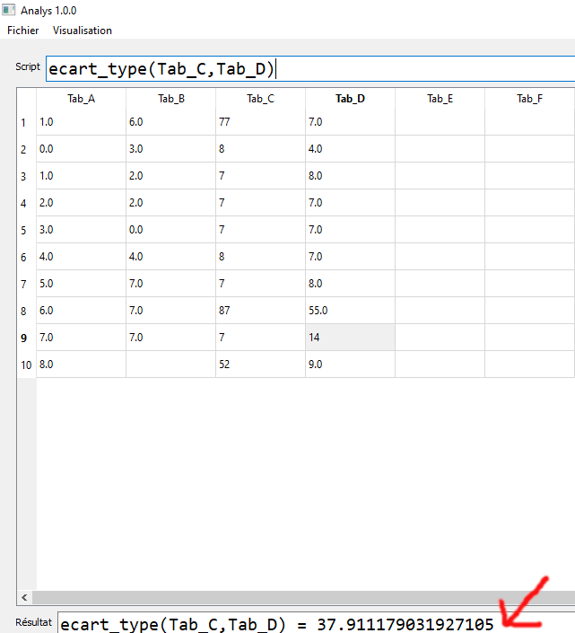
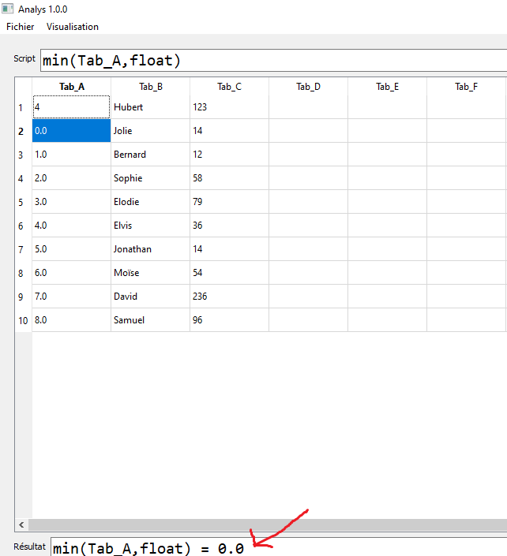
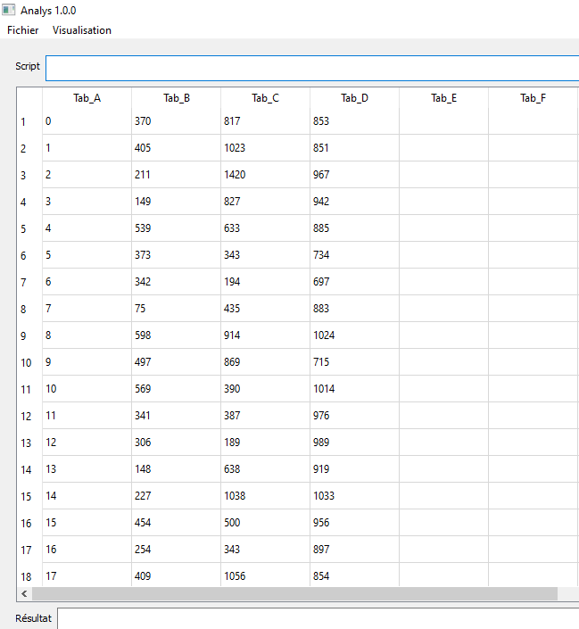

Voici la manière dont les différentes méthodes sont définies
add(Colonne,élément à ajouter,type d'ajout)
add(Colonne,élément à ajouter,type d'ajout,début)
add(Colonne,élément à ajouter,type d'ajout,début,fin)
Colonne: Vous devez indiquer la colonne concernée par la l'opération:
Par exemple: Tab_A,Tab_B ou encore Tab_Z
élément à ajouter: Cet élément peut bien être un nombre ou encore un caractère
Par exemple: 1.20117695, % ou encore le mot "bien"
type d'ajout : Vous allez indiquer si c'est une chaine de caractère que vous allez ajouter ou si c'est un nombre .
Si c'est un nombre mettez à cet endroit le mot clé float et s'il
s'agit d'une chaine de caractère mettez str.
début : La variable début permet d'indiquer à l'algorithme la ligne à partir de laquelle il faut
commencer l'opération. Vous pouvez lui indiquer de commencer les opérations à partir de la ligne 10 en mettant 10 comme variable
fin : La variable fin permet d'indiquer à l'algorithme la ligne à partir de laquelle il faut
s'arrêter . Vous pouvez lui indiquer de s'arrêter à partir de la ligne 50 en mettant 50 comme variable
Par exemple add(Tab_S,1.0244,float) veut dire que vous voulez ajouter 1.0244 à tous les nombres de la colonne Tab_S . Ainsi
si une case de la colonne Tab_S contenait 11 au départ, après l'exécution de cette méthode la case contiendrait 12.0244 .
Par contre add(Tab_S,1.0244,str) ajouterait 1.0244 à 11 sous forme de chaine de carctère .Ce qui donnerait 111.0244
NB: Lorsque vous utiliser float veillez à ce que la colonne ou du moins la portion de la colonne
choisie grâce aux variable début et fin ne contiennent que des nombres . Au cas contraire rien ne
passera et vous recevrer un message de notification vous indiquant que la case où se trouve le caractère non numérique .
Voici un exemple d'utilisation de la méthode add
Avant l'exécution de la méthode add
Après l'exécution de la méthode add(Tab_A,5,float). L'algorithme a ajouté 5 à tous les nombres de la colonne
Après l'exécution de la méthode add(Tab_A,5,str). L'algorithme a ajouté 5 aux contenues de toutes les cases de la colonne
count([élément à chercher dans la première colonne,élément à chercher dans la seconde colonne,...];[Première colonne où chercher,deuxième colonne où chercher,...])
Première accolade : [] Cet accolade contient les éléments à chercher dans les colonnes indiqués.
Par exemple [Hans,Olivier,14 ans] veut dire que vous voulez que l'algorithme vous compte les cases
où il y a le nom Hans dans la première colonne,
olivier dans la seconde colonne,et enfin 14 ans dans la dernière colonne indiquée.
Deuxième accolade : [] Cet accolade contient les colonnes où il faut chercher.
Par exemple l'ajout de [Tab_X,Tab_Y,Tab_D] comme second variable dans l'exemple précendent veut dire que l'algorithme va chercher les cases où il y a Hans
dans la colonne Tab_X, Olivier dans la colonne Tab_Y et enfin 14 ans dans la colonne Tab_D .
L'exemple précendent se resume donc en count([Hans,Olivier,14 ans];[Tab_X,Tab_Y,Tab_D])
Dans le cas ci-dessous l'exécution de la méthode count([nan,6.0,77];[Tab_A,Tab_B,Tab_C]). donne 3 comme résultat.
delete(Colonne,début)
delete(Colonne,début,fin)
La méthode delete permet de supprimer une supprimer les contenus d'une colonne
Colonne: Vous devez indiquer la colonne concernée par la l'opération:
Par exemple: Tab_A,Tab_B ou encore All
Le mot clé All indique que la suppression se fera sur toute la ligne
début : La variable début permet d'indiquer à l'algorithme la ligne à partir de laquelle il faut
commencer l'opération. Vous pouvez lui indiquer de commencer les opérations à partir de la ligne 10 en mettant 10 comme variable
fin : La variable fin permet d'indiquer à l'algorithme la ligne à partir de laquelle il faut
s'arrêter . Vous pouvez lui indiquer de s'arrêter à partir de la ligne 50 en mettant 50 comme variable
Par exemple delete(All,1) veut dire que vous voulez supprimer les éléments contenus dans la lignes n°1 de toutes les colonnes
de Tab_A à Tab_Z
Voici le tableau avant l'exécution de la méthode delete
Voici le tableau après l'exécution de la commande delete(Tab_B,1).Le premier élément de la colonne Tab_B
a été retiré.
Voici le tableau après l'exécution de la commande delete(All,1).Les premiers éléments de toutes les colonnes
ont été retirés.
div(Colonne,diviseur,float)
div(Colonne,diviseur,float,début)
div(Colonne,diviseur,float,début,fin)
Colonne: Vous devez indiquer la colonne concernée par la l'opération:
Par exemple: Tab_A,Tab_B ou encore Tab_Z
float veut dire tout simplement que vous voulez faire une opération arithmétique
début : La variable début permet d'indiquer à l'algorithme la ligne à partir de laquelle il faut
commencer l'opération. Vous pouvez lui indiquer de commencer les opérations à partir de la ligne 10 en mettant 10 comme variable
fin : La variable fin permet d'indiquer à l'algorithme la ligne à partir de laquelle il faut
s'arrêter . Vous pouvez lui indiquer de s'arrêter à partir de la ligne 50 en mettant 50 comme variable
Par exemple div(Tab_J,14,float) veut dire que voulez diviser tous les nombres se trouvant dans la colonne
Tab_J par 14
NB: La méthode div ne fonctionne que si la colonne indiquée ne contient que des nombres ou du moins
si les cases contenues entre les variables début et fin ne contiennent que des nombres . Au cas contraire rien ne
passera et vous recevrer un message de notification vous indiquant que la case où se trouve le caractère non numérique
Voici le tableau avant l'exécution de la commande div.
Voici le tableau après l'exécution de la commande div(Tab_A,100,float).
Mais on peut voir aussi plus de contrôle sur l'exécution de l'algorithme.Dans l'exemple suivant on ne va diviser que les 10 premières valeurs par 100.
Voici le tableau après l'exécution de la commande div(Tab_A,100,float,1,10).
Les valeurs situées dans les cases au delà de 10 n'ont pas été impacté par la commande div(Tab_A,100,float,1,10).
general_sort(Colonne,sens,type)
general_sort(Colonne,sens,type,début)
general_sort(Colonne,sens,type,début,fin)
Colonne: Vous devez indiquer la colonne concernée par la l'opération:
Par exemple: Tab_A,Tab_B ou encore Tab_Z
sens: Vous devez indiquer si vous voulez ranger les données par ordre croissante ou par ordre décroissante.
Si vous soulez les ranger par ordre croissante mettez mM .Par contre si vous voulez les ranger par ordre décroissante mettez Mm
type: Vous pouvez mettre soit str soit float .Mettez str quand vous voulez trier une colonne qui contient de chose autre que des nombres et
soit float quand vous voulez trier des nombres.
début : La variable début permet d'indiquer à l'algorithme la ligne à partir de laquelle il faut
commencer l'opération. Vous pouvez lui indiquer de commencer les opérations à partir de la ligne 10 en mettant 10 comme variable.
fin : La variable fin permet d'indiquer à l'algorithme la ligne à partir de laquelle il faut
s'arrêter . Vous pouvez lui indiquer de s'arrêter à partir de la ligne 50 en mettant 50 comme variable .
La méthode general_sort permet de ranger toutes les données du tableau selon les valeurs d'une colonne précise.
On peut par exemple ranger les noms de élèves grâce à leurs notes avec general_sort.
Voici les données. On va ensuite les ranger en fonction des nombres de la colonne Tab_B
Grâce à la commande general_sort(Tab_C,mM,float) les
chiffres de la colonne Tab_C ont été rangés du plus petit au plus grand. Mais en plus de cela, general_sort range
le contenu des autres colonnes dans le même ordre.
Dans le cas ci ce sont les noms de la colonne Tab_B qui ont été rangés du moins alphabétiquement avancé au plus alphabétiquement avancé.
Ensuite les autres colonnes on été rangées dans le même ordre que les noms de la colonne Tab_B .
ecart_type(Colonne)
ecart_type(Colonne,Colonne)
ecart_type(Colonne,Colonne,début)
ecart_type(Colonne,début,fin)
ecart_type(Colonne,Colonne,début,fin)
Colonne: Vous devez indiquer la colonne concernée par la l'opération:
Par exemple: Tab_A,Tab_B ou encore Tab_Z
début : La variable début permet d'indiquer à l'algorithme la ligne à partir de laquelle il faut
commencer l'opération. Vous pouvez lui indiquer de commencer les opérations à partir de la ligne 10 en mettant 10 comme variable
fin : La variable fin permet d'indiquer à l'algorithme la ligne à partir de laquelle il faut
s'arrêter . Vous pouvez lui indiquer de s'arrêter à partir de la ligne 50 en mettant 50 comme variable
Comme son nom l'indique, la méthode ecart_type permet de calculer l'écart_type d'une serie de valeur.
Par exemple ecart_type(Tab_A) vous renvoie l'écart_type des valeurs numériques contenues dans la colonne Tab_A .
Par exemple ecart_type(Tab_A,Tab_G) vous renvoie l'écart_type calculé à partir des valeurs numériques contenues dans la colonne Tab_A
et celle contenues dans la colonne Tab_G .
Par exemple ecart_type(Tab_A,140,800) vous renvoie l'écart_type calculé à partir des valeurs numériques comprises entre de la ligne 140 à la ligne 800 de la colonne Tab_A .
La commande ecart_type(Tab_C) calcule l'écart_type des valeurs situées dans la colonne Tab_C.
Le résultat est ensuite affiché en a bas .
Comme pour la méthode div on peut avoir plus de contrôle sur le fonctionnement de la méthode ecart_type
.La commande ecart_type(Tab_C,1,5) calcule l'écart_type des valeurs contenues dans les case 1 à 5 de la colonne Tab_C.
Le résultat est ensuite affiché en a bas .

La commande ecart_type(Tab_C,Tab_D) calcule l'écart_type des valeurs situées dans les colonne Tab_C et Tab_D en considérant les
données de Tab_C comme des valeurs et ceux de Tab_D comme des effectifs.
Le résultat est ensuite affiché en a bas .
C'est le même principe qu'en haut sauf qu'ici on ne prend que les cinq premières valeurs des deux tableaux en compte.
fill(Colonne,calcul à faire,début,fin)
Colonne: Vous devez indiquer la colonne concernée par la l'opération:
Par exemple: Tab_A,Tab_B ou encore Tab_Z
Le calul à faire s'écrit sous forme algébrique. L'inconnu de l'expression est x.La syntaxe
de l'ecriture est la même que celle de du langage Python.
Par exemple la commande fill(Tab_A,2*x+6*x*x-6,1,12) va remplir les cellules 1 à 12
de la colonne Tab_A tout en mettant dans les cellules le résultat de l'expression 2*x+6*x*x-6.
début : La variable début permet d'indiquer à l'algorithme la ligne à partir de laquelle il faut
commencer l'opération. Vous pouvez lui indiquer de commencer les opérations à partir de la ligne 10 en mettant 10 comme variable
fin : La variable fin permet d'indiquer à l'algorithme la ligne à partir de laquelle il faut
s'arrêter . Vous pouvez lui indiquer de s'arrêter à partir de la ligne 50 en mettant 50 comme variable
Voici le tableau avant l'exécution de la commande fill(Tab_E,9*x*x-6*x+cos(x),1,10) . La colonne Tab_E
est vide.
Voici le tableau après l'exécution de la commande fill(Tab_E,9*x*x-6*x+cos(x),1,10). La colonne Tab_E
a été remplie par les images des nombres compris entre 1 et 10.
lower(Colonne)
lower(Colonne,début,fin)
lower(Colonne,début,fin,indice du caractère à modifier)
lower(Colonne,début,fin,indices des caractères à modifier)
La méthode lower permet de mettre la lettre sous forme minuscule.
Colonne: Vous devez indiquer la colonne concernée par la l'opération:
Par exemple: Tab_A,Tab_B ou encore Tab_Z
début : La variable début permet d'indiquer à l'algorithme la ligne à partir de laquelle il faut
commencer l'opération. Vous pouvez lui indiquer de commencer les opérations à partir de la ligne 10 en mettant 10 comme variable
fin : La variable fin permet d'indiquer à l'algorithme la ligne à partir de laquelle il faut
s'arrêter . Vous pouvez lui indiquer de s'arrêter à partir de la ligne 50 en mettant 50 comme variable
indice du caractère à modifier : Ici il s'agit d'avoir un contrôle sur l'exécution de la méthode. Par exemple si vous voulez modifier la première lettre
de tous les mots de la colonne, vous devez mettre 1
indices des caractères à modifier : Ici il s'agit d'avoir un contrôle sur l'exécution de la méthode. Par exemple si vous voulez modifier les trois premières lettres
de tous les mots de la colonne, vous y mettre 1 suivi de 3
Par exemple la commandelower(Tab_A,1,25,1) veut dire q'on veut mettre sous forme minuscule la première
lettre de tous les mots de la colonne Tab_A et cela sera fait de la cellule 1 à la cellule 25.
Voici le tableau avant l'exécution de la commande lower(Tab_A,1,10,1).Les premières lettres des noms de la colonne
sont tous en majiscule.
Voici le tableau après l'exécution de la commande lower(Tab_A,1,10,1).Les premières lettres des noms de la colonne
sont tous maintenant en miniuscule.
max(Colonne,type)
max(Colonne,type,début)
max(Colonne,type,fin)
Colonne: Vous devez indiquer la colonne concernée par la l'opération:
Par exemple: Tab_A,Tab_B ou encore Tab_Z
type : La variable type permet d'indiquer à l'ordinateur comment vous voulez q'uil effectue la recherche du maximum .
En mettant str vous lui indiquez qu'il faut chercher le mot le plus avancé alphabétiquement de la colonne choisie. Par contre en mettant float
vous lui indiquer de chercher le nombre le plus élevé de la colonne choisie .
NB: Il faut savoir qu'en appliquant str à une colonne contenant des nombres vous ne recevrez pas le maximum mais le nombre qui commence avec le chiffre se rapprochant le plus de 9.
Ainsi avec str 90 > 11474 car 90 commence par 9 alors que 11474 commence par 1 .
début : La variable début permet d'indiquer à l'algorithme la ligne à partir de laquelle il faut
commencer l'opération. Vous pouvez lui indiquer de commencer les opérations à partir de la ligne 10 en mettant 10 comme variable
fin : La variable fin permet d'indiquer à l'algorithme la ligne à partir de laquelle il faut
s'arrêter . Vous pouvez lui indiquer de s'arrêter à partir de la ligne 50 en mettant 50 comme variable
La colonne contient des nombres et le mot clé float indique qu'il faut retourner le nombre le plus élevé de la colonne.
La colonne contient des nom et le mot clé str indique qu'il faut retourner le nom le plus alphabétiquement avancé de la colonne.
La colonne contient des nombres et le mot clé str indique qu'il faut retourner le nombre commençant par le chiffre le plus proche de 9 de la colonne.
mean(Colonne)
mean(Colonne,Colonne)
mean(Colonne,Colonne,début)
mean(Colonne,début,fin)
mean(Colonne,Colonne,début,fin)
Colonne: Vous devez indiquer la colonne concernée par la l'opération:
Par exemple: Tab_A,Tab_B ou encore Tab_Z
début : La variable début permet d'indiquer à l'algorithme la ligne à partir de laquelle il faut
commencer l'opération. Vous pouvez lui indiquer de commencer les opérations à partir de la ligne 10 en mettant 10 comme variable
fin : La variable fin permet d'indiquer à l'algorithme la ligne à partir de laquelle il faut
s'arrêter . Vous pouvez lui indiquer de s'arrêter à partir de la ligne 50 en mettant 50 comme variable
Comme son nom l'indique, la méthode mean permet de calculer la moyenne d'une serie de valeur.
Par exemple mean(Tab_A) vous renvoie la moyenne des valeurs numériques contenues dans la colonne Tab_A .
Par exemple mean(Tab_A,Tab_G) vous renvoie la moyenne calculé à partir des valeurs numériques contenues dans la colonne Tab_A
et celle contenues dans la colonne Tab_G .
Par exemple mean(Tab_A,140,800) vous renvoie la moyenne calculé à partir des valeurs numériques comprises entre de la ligne 140 à la ligne 800 de la colonne Tab_A .
La commande mean(Tab_A) calcule la moyenne des nombres de la colonne Tab_A et donne la valeur en bas.
La commande mean(Tab_A,Tab_C) calcule la moyenne des nombres de la colonne Tab_A et Tab_C et donne la valeur en bas.
La commande mean(Tab_A) calcule la moyenne des nombres de la colonne Tab_A et donne la valeur en bas sauf
qu'ici il y a plus de contrôle car on ne calcule que la moyenne des nombres situés entre les lignes 1 et 5.
La commande mean(Tab_A,Tab_C) calcule la moyenne des nombres de la colonne Tab_A et Tab_C et donne la valeur en bas bas sauf
qu'ici il y a plus de contrôle car on ne calcule que la moyenne des nombres situés entre les lignes 1 et 5.
min(Colonne,type)
min(Colonne,type,début)
min(Colonne,type,fin)
Colonne: Vous devez indiquer la colonne concernée par la l'opération:
Par exemple: Tab_A,Tab_B ou encore Tab_Z
type : La variable type permet d'indiquer à l'ordinateur comment vous voulez q'uil effectue la recherche du maximum .
En mettant str vous lui indiquez qu'il faut chercher le mot le moins avancé alphabétiquement de la colonne choisie. Par contre en mettant float
vous lui indiquer de chercher le nombre le moins élevé de la colonne choisie .
NB: Il faut savoir qu'en appliquant str à une colonne contenant des nombres vous ne recevrez pas le minimum mais le nombre qui commence avec le chiffre se rapprochant le plus de 0.
Ainsi avec str 11474 < 90 car 11474 commence par 1 alors que 90 commence par 9 .
début : La variable début permet d'indiquer à l'algorithme la ligne à partir de laquelle il faut
commencer l'opération. Vous pouvez lui indiquer de commencer les opérations à partir de la ligne 10 en mettant 10 comme variable
fin : La variable fin permet d'indiquer à l'algorithme la ligne à partir de laquelle il faut
s'arrêter . Vous pouvez lui indiquer de s'arrêter à partir de la ligne 50 en mettant 50 comme variable

La colonne contient des nombres et le mot clé float indique qu'il faut retourner le nombre le moins élevé de la colonne.
La colonne contient des nom et le mot clé str indique qu'il faut retourner le nom le moins alphabétiquement avancé de la colonne.
La colonne contient des nombres et le mot clé str indique qu'il faut retourner le nombre commençant par le chiffre le plus proche de 1 de la colonne.
mul(Colonne,multiplicateur,type de multiplication)
mul(Colonne,multiplicateur,type de multiplication,début)
mul(Colonne,multiplicateur,type de multiplication,début,fin)
Colonne: Vous devez indiquer la colonne concernée par la l'opération:
Par exemple: Tab_A,Tab_B ou encore Tab_Z
Multiplicateur: Cet élément est un nombre. Soit un entier comme 12 soit un flottant comme 31.245778
type de multiplication : Vous allez indiquer si vous voulez multiplier la sequence de chaine de caractères qui se trouve dans la
colonne où si vous voulez multiplier les nombres de la colonne par le multiplicateur.
Si vous voulez multiplier les nombres de la colonne par le multiplicateur mettez float mais si vous voulez multiplier la sequence
de chaine de caractères de la colonne mettez str.
début : La variable début permet d'indiquer à l'algorithme la ligne à partir de laquelle il faut
commencer l'opération. Vous pouvez lui indiquer de commencer les opérations à partir de la ligne 10 en mettant 10 comme variable.
fin : La variable fin permet d'indiquer à l'algorithme la ligne à partir de laquelle il faut
s'arrêter . Vous pouvez lui indiquer de s'arrêter à partir de la ligne 50 en mettant 50 comme variable .
Par exemple prenons la colonne Tab_P et tapons la commande mul(Tab_P,12,float) . Cela veut dire qu'on veut multiplier les nombres de la colonne Tab_P par 12 .
Ainsi une case de la colonne Tab_P contenant 25 avant l'execution de la commande contiendra à la fin 12*25 soit 300. Par contre en tapant la commande mul(Tab_P,12,float)
on va multiplier par 12 toutes les séquence de la colonne Tab_P. Ainsi la case contenant 25 avant l'éxécution de la commande contiendra 252525252525252525252525 après.
Soit 12 répétitions du chiffre 25.
Voici le tableau avant l'exécution de la méthode mul
Voici le tableau après l'exécution de la commande mul(Tab_A,100,float)
Voici le tableau après l'exécution de la commande mul(Tab_B,2,str) . Les noms contenus dans les cellules de la colonne Tab_B on été multiplié par 2.
operation(Calcul à faire,début,fin)
La méthode operation permet de faire des opérations sur les nombres contenus dans les colonnes.
début : La variable début permet d'indiquer à l'algorithme la ligne à partir de laquelle il faut
commencer l'opération. Vous pouvez lui indiquer de commencer les opérations à partir de la ligne 10 en mettant 10 comme variable.
fin : La variable fin permet d'indiquer à l'algorithme la ligne à partir de laquelle il faut
s'arrêter . Vous pouvez lui indiquer de s'arrêter à partir de la ligne 50 en mettant 50 comme variable .
Par exemple on peut écrire operation(Tab_C[i] = Tab_D[i-1]*Tab_H[i+1]+Tab[i]+25,10,25).
Ou encore operation(Tab_B[i+1] = Tab_B[i-1]+Tab_B[i],2,10) qui est l'implémentation de la suite de Fibonacci sur
les nombres de la colonne Tab_B entre les cases 2 et 20.

Voici le tableau après l'exécution de la commande operation .
Voici le tableau après l'exécution de la commande operation(Tab_E[i] = Tab_A[i]+Tab_B[i],1,10) . Ici on additionne les nombres des cellules des
colonnes Tab_A et Tab_C et on les met dans les cellules de la colonne Tab_E et ce de la cellule 1 à la cellule 10 .
produce(Colonne)
produce(Colonne,début)
produce(Colonne,fin)
Colonne: Vous devez indiquer la colonne concernée par la l'opération:
Par exemple: Tab_A,Tab_B ou encore Tab_Z
début : La variable début permet d'indiquer à l'algorithme la ligne à partir de laquelle il faut
commencer l'opération. Vous pouvez lui indiquer de commencer les opérations à partir de la ligne 10 en mettant 10 comme variable.
fin : La variable fin permet d'indiquer à l'algorithme la ligne à partir de laquelle il faut
s'arrêter . Vous pouvez lui indiquer de s'arrêter à partir de la ligne 50 en mettant 50 comme variable .
La méthode produce permet de calculer le produit des nombres contenus dans une colonne. Par exemple produce(Tab_R) donnera le produit
des nombres contenus dans la colonne Tab_R.
La commande produce(Tab_C) calcule le produit de toutes les valeurs de la colonne Tab_C et affiche le résultat en bas.
La commande produce(Tab_C,1,2) calcule le produit de toutes les valeurs de la colonne Tab_C comprises entre 1 et 2 et affiche le résultat en bas.
remove(Colonne)
Colonne: Vous devez indiquer la colonne concernée par la l'opération:
Par exemple: Tab_A,Tab_B ou encore Tab_Z
La méhode remove permet de supprimer totalement le contenu d'une colonne de la remplacer par la colonne située à droite.
Voici les données avant l'exéction de la commande remove
Voici les données avant l'exéction de la commande remove(Tab_B) .Cette commande a éffacé toutes les données de
la colonne Tab_B et a remis les données de la colonne Tab_C à la place
sort(Colonne,sens,type)
sort(Colonne,sens,type,début)
sort(Colonne,sens,type,début,fin)
Colonne: Vous devez indiquer la colonne concernée par la l'opération:
Par exemple: Tab_A,Tab_B ou encore Tab_Z
sens: Vous devez indiquer si vous voulez ranger les données par ordre croissante ou par ordre décroissante.
Si vous soulez les ranger par ordre croissante mettez mM .Par contre si vous voulez les ranger par ordre décroissante mettez Mm
type: Vous pouvez mettre soit str soit float .Mettez str quand vous voulez trier une colonne qui contient de chose autre que des nombres et
soit float quand vous voulez trier des nombres.
début : La variable début permet d'indiquer à l'algorithme la ligne à partir de laquelle il faut
commencer l'opération. Vous pouvez lui indiquer de commencer les opérations à partir de la ligne 10 en mettant 10 comme variable.
fin : La variable fin permet d'indiquer à l'algorithme la ligne à partir de laquelle il faut
s'arrêter . Vous pouvez lui indiquer de s'arrêter à partir de la ligne 50 en mettant 50 comme variable .
Par exemple sort(Tab_D,mM,float) veut dire que voulez ranger tous les nombres de la colonne Tab_D du plus petit au plus grand.
Voici la manière dont les données sont rangées dans les différentes colonnnes.
Grâce à la commande sort(Tab_C,mM,float) on range range les nombres de la colonne Tab_C du minimum au maximum.
Le mot clé mM indique en effet qu'on veut ranger les nombres du plus petit au plus grand.
Grâce à la commande sort(Tab_C,Mm,float) on range range les nombres de la colonne Tab_C du maximum au minimum.
Le mot clé Mm indique en effet qu'on veut ranger les nombres du plus grand au plus petit.
Grâce à la commande sort(Tab_B,mM,str) on range range les noms de la colonne Tab_C du moins alphabétiquement avancé au
plus alphabétiquement avancé.Le mot clé Mm indique en effet qu'on veut ranger les noms du moins alphabétiquement avancé au
plus alphabétiquement avancé.
Grâce à la commande sort(Tab_B,Mm,str) on range les nombres de la colonne Tab_C du plus alphabétiquement avancé
au moins alphabétiquement avancé.Le mot clé Mm indique en effet qu'on veut ranger les nombres du plus alphabétiquement avancé
au moins alphabétiquement avancé.
sub(Colonne,élément à retirer,type)
sub(Colonne,élément à retirer,type,début)
sub(Colonne,élément à retirer,type,début,fin)
Colonne: Vous devez indiquer la colonne concernée par la l'opération:
Par exemple: Tab_A,Tab_B ou encore Tab_Z
élément à retirer: Cet élément peut être un nombre comme 25 ou un caractère comme u
type: Vous pouvez mettre soit str soit float .Mettez str quand vous voulez travailler sur des
chaines de caractères et float si vous voulez travailler sur des nombres.
début : La variable début permet d'indiquer à l'algorithme la ligne à partir de laquelle il faut
commencer l'opération. Vous pouvez lui indiquer de commencer les opérations à partir de la ligne 10 en mettant 10 comme variable.
fin : La variable fin permet d'indiquer à l'algorithme la ligne à partir de laquelle il faut
s'arrêter . Vous pouvez lui indiquer de s'arrêter à partir de la ligne 50 en mettant 50 comme variable .
La méthode sub permet de faire deux choses. Il permet de faire soit la soustraction si on indique float comme type
ou de retirer un caractère de toutes les cases en mettant str comme type.
Prenons la commande sub(Tab_O,9,float). Cette comment permet de soustraire 9 à tous les nombres de la colonne Tab_O. Ainsi une case de la
colonne Tab_O contenant le nombre 17 avant l'exécution de la commande contiendra après le nombre 8.Par contre la commande
sub(Tab_O,9,str) permet de retirer le chiffre 9 aux contenus de toutes les cases de la colonne Tab_O. Par exemple si une case
contenait le uhf47894 avant l'exécution de la commande. Après cette execution la case ne contiendrait que uhf4784 car la commande a retiré
le 9 q'il a trouvé dans la case.
Voici les données avant l'exéction de la commande sub
L'exéction de la commande sub(Tab_C,25,float) a retiré 25 à tous les nombres de la colone Tab_C
Voici les données avant l'exéction de la commande sub(Tab_B,o,str)
L'exéction de la commande sub(Tab_B,o,str) a retiré o à tous les nnom de la colone Tab_B
subtitute(Colonne,élément à retirer,élément à mettre)
subtitute(Colonne,élément à retirer,élément à mettre,début)
subtitute(Colonne,élément à retirer,élément à mettre,début,fin)
Colonne: Vous devez indiquer la colonne concernée par la l'opération:
Par exemple: Tab_A,Tab_B ou encore Tab_Z
élément à retirer: Cet élément peut être un nombre comme 25 ou lettre comme u .
élément à mettre: Cet élément peut être un nombre comme 25 ou lettre comme u .
début : La variable début permet d'indiquer à l'algorithme la ligne à partir de laquelle il faut
commencer l'opération. Vous pouvez lui indiquer de commencer les opérations à partir de la ligne 10 en mettant 10 comme variable.
fin : La variable fin permet d'indiquer à l'algorithme la ligne à partir de laquelle il faut
s'arrêter . Vous pouvez lui indiquer de s'arrêter à partir de la ligne 50 en mettant 50 comme variable .
Ici on remarque que la colonne Tab_B+d contient le mot nan à plusieurs endroits.
Grâce à l'exécution de la commande subtitute(Tab_D,nan,SUPER,1,10), les mots nan
ont tous été remplacés par le mot super SUPER.
sum(Colonne)
sum(Colonne,début)
sum(Colonne,fin)
Colonne: Vous devez indiquer la colonne concernée par la l'opération:
Par exemple: Tab_A,Tab_B ou encore Tab_Z
début : La variable début permet d'indiquer à l'algorithme la ligne à partir de laquelle il faut
commencer l'opération. Vous pouvez lui indiquer de commencer les opérations à partir de la ligne 10 en mettant 10 comme variable.
fin : La variable fin permet d'indiquer à l'algorithme la ligne à partir de laquelle il faut
s'arrêter . Vous pouvez lui indiquer de s'arrêter à partir de la ligne 50 en mettant 50 comme variable .
La méthode sum permet de calculer la somme des nombres contenus dans une colonne. Par exemple sum(Tab_R) donnera la somme
des nombres contenus dans la colonne Tab_R.
La commande sum(Tab_C) calcule la somme des valeurs de Tab_C et les affiche en bas
La commande sum(Tab_C,1,5) calcule la somme des valeurs de Tab_C et les affiche en bas situées dans les cellules 1 à 5.
to_freq(Colonne,nombre de chiffres après la virgule)
to_freq(Colonne,début,nombre de chiffres après la virgule)
to_freq(Colonne,début,fin,nombre de chiffres après la virgule)
Colonne: Vous devez indiquer la colonne concernée par la l'opération:
Par exemple: Tab_A,Tab_B ou encore Tab_Z
début : La variable début permet d'indiquer à l'algorithme la ligne à partir de laquelle il faut
commencer l'opération. Vous pouvez lui indiquer de commencer les opérations à partir de la ligne 10 en mettant 10 comme variable.
fin : La variable fin permet d'indiquer à l'algorithme la ligne à partir de laquelle il faut
s'arrêter . Vous pouvez lui indiquer de s'arrêter à partir de la ligne 50 en mettant 50 comme variable .
fin : La variable nombre de chiffres après la virgule
comme son nom l'indique permet de choisir le nombre chiffres à mettre après la virgule.
La méthode to_freq permet de transformer les nombres d'une colonne en fréquences toutes inférieures à 1.Ces fréquences sont calculées à partir de l'ensemble des
nombres de la colonne.
Voici le tableau après l'exécution de la commande to_freq(Tab_A,3).
Voici le tableau après l'exécution de la commande to_freq(Tab_A,1,5,2) . Ici seul les cinq premières valeurs sont prises en compte
to_percent(Colonne,nombre de chiffres après la virgule)
to_percent(Colonne,début,nombre de chiffres après la virgule)
to_percent(Colonne,début,fin,nombre de chiffres après la virgule)
Colonne: Vous devez indiquer la colonne concernée par la l'opération:
Par exemple: Tab_A,Tab_B ou encore Tab_Z
début : La variable début permet d'indiquer à l'algorithme la ligne à partir de laquelle il faut
commencer l'opération. Vous pouvez lui indiquer de commencer les opérations à partir de la ligne 10 en mettant 10 comme variable.
fin : La variable fin permet d'indiquer à l'algorithme la ligne à partir de laquelle il faut
s'arrêter . Vous pouvez lui indiquer de s'arrêter à partir de la ligne 50 en mettant 50 comme variable .
fin : La variable nombre de chiffres après la virgule
comme son nom l'indique permet de choisir le nombre chiffres à mettre après la virgule.
La méthode to_percent permet de transformer les nombres d'une colonne en pourcentages tous inférieurs à 100.Ces pourcentages sont calculés à partir de l'ensemble des
nombres de la colonne.
Voici le tableau après l'exécution de la commande to_percent(Tab_A,3).
Voici le tableau après l'exécution de la commande to_precent(Tab_A,1,5,2) . Ici seul les cinq premières valeurs sont prises en compte
upper(Colonne)
upper(Colonne,début,fin)
upper(Colonne,début,fin,indice du caractère à modifier)
upper(Colonne,début,fin,indices des caractères à modifier)
La méthode upper permet de mettre la lettre sous forme majiscule.
Colonne: Vous devez indiquer la colonne concernée par la l'opération:
Par exemple: Tab_A,Tab_B ou encore Tab_Z
début : La variable début permet d'indiquer à l'algorithme la ligne à partir de laquelle il faut
commencer l'opération. Vous pouvez lui indiquer de commencer les opérations à partir de la ligne 10 en mettant 10 comme variable
fin : La variable fin permet d'indiquer à l'algorithme la ligne à partir de laquelle il faut
s'arrêter . Vous pouvez lui indiquer de s'arrêter à partir de la ligne 50 en mettant 50 comme variable
indice du caractère à modifier : Ici il s'agit d'avoir un contrôle sur l'exécution de la méthode. Par exemple si vous voulez modifier la première lettre
de tous les mots de la colonne, vous devez mettre 1
indices des caractères à modifier : Ici il s'agit d'avoir un contrôle sur l'exécution de la méthode. Par exemple si vous voulez modifier les trois premières lettres
de tous les mots de la colonne, vous y mettre 1 suivi de 3
Par exemple la commandeupper(Tab_A,1,25,1) veut dire q'on veut mettre sous forme majiscule la première
lettre de tous les mots de la colonne Tab_A et cela sera fait de la cellule 1 à la cellule 25.
Tous les noms de la colonne Tab_Asont en minuscule.
Tous les noms de la colonne Tab_Asont en minuscule.Mais grâce à la commande upper(Tab_A,1,10,1)
tous les premières lettres de tous les mots de la colonne ont été mis en majuscule.
variance(Colonne)
variance(Colonne,Colonne)
variance(Colonne,Colonne,début)
variance(Colonne,début,fin)
variance(Colonne,Colonne,début,fin)
Colonne: Vous devez indiquer la colonne concernée par la l'opération:
Par exemple: Tab_A,Tab_B ou encore Tab_Z
début : La variable début permet d'indiquer à l'algorithme la ligne à partir de laquelle il faut
commencer l'opération. Vous pouvez lui indiquer de commencer les opérations à partir de la ligne 10 en mettant 10 comme variable
fin : La variable fin permet d'indiquer à l'algorithme la ligne à partir de laquelle il faut
s'arrêter . Vous pouvez lui indiquer de s'arrêter à partir de la ligne 50 en mettant 50 comme variable
Comme son nom l'indique, la méthode variance permet de calculer la variance d'une serie de valeur.
Par exemple variance(Tab_A) vous renvoie la variance des valeurs numériques contenues dans la colonne Tab_A .
Par exemple variance(Tab_A,Tab_G) vous renvoie la variance calculée à partir des valeurs numériques contenues dans la colonne Tab_A
et celle contenues dans la colonne Tab_G .
Par exemple variance(Tab_A,140,800) vous renvoie la calculée à partir des valeurs numériques comprises entre de la ligne 140 à la ligne 800 de la colonne Tab_A .
La commande variance(Tab_A) calcule la variance des valeurs situées dans la colonne Tab_A.
Le résultat est ensuite affiché en a bas .
Comme pour la méthode div on peut avoir plus de contrôle sur le fonctionnement de la méthode ecart_type
.La commande variance(Tab_A,1,5) calcule la variance des valeurs contenues dans les case 1 à 5 de la colonne Tab_C.
Le résultat est ensuite affiché en a bas .
La commande ecart_type(Tab_A,Tab_B) calcule l'écart_type des valeurs situées dans les colonne Tab_C et Tab_D en considérant les
données de Tab_A comme les valeurs et ceux de Tab_B comme des effectifs.
Le résultat est ensuite affiché en a bas .
C'est le même principe qu'en haut sauf qu'ici on ne prend en
compte que les 5 primières valeurs des deux colonnes